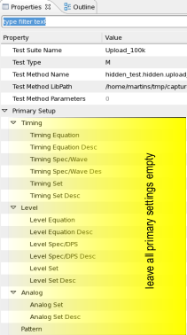

Hiding the upload of the error map
About this task
This task example describes how to hide the upload of error map data behind a digital test.
Procedure
-
Allocate result areas
The following test method allocates three result areas for the error map data named: EmapArea100k, EmapArea200k and EmapArea300k.
class AllocEmapResultArea: public testmethod::TestMethod { protected: virtual void initialize() { //Add your initialization code here } virtual void run() { ON_FIRST_INVOCATION_BEGIN(); RESULT_AREA_CONFIG resConf("@"); resConf.appendArea("EmapArea_100k",102400) .appendArea("EmapArea_200k",204800) .appendArea("EmapArea_300k",307200) .activate(); ON_FIRST_INVOCATION_END(); return; } virtual void postParameterChange(const string& parameterIdentifier) { //Add your code return; } virtual const string getComment() const { string comment = " please add your comment for this method."; return comment; } }; REGISTER_TESTMETHOD("AllocEmapResultArea", AllocEmapResultArea); -
Capture error map data
This example shows how the error map recording can be configured to use
- the test processor's DDR memory
- acquire large fail data
- acquire per edge results
- select the result area
A functional test is executed to capture the date before the result areas are restored.
class CaptureEmapData: public testmethod::TestMethod { protected: virtual void initialize() { //Add your initialization code here } virtual void run() { ON_FIRST_INVOCATION_BEGIN(); // Configure measurement into DDR and select result area FW_TASK( "DCGM FAIL,STRT,NONE\n" "DCRP 102400,(@)\n" "DCRM EMAP,8,PF,(@@)\n" "DCRT RAM,(@@)\n" "RRSC \"EmapArea_100k\"\n" // Select area for result recording ); FUNCTIONAL_TEST(); // Stop recording into result area FW_TASK("RRSC OFF\n"); ON_FIRST_INVOCATION_END(); return; } virtual void postParameterChange(const string& parameterIdentifier) { //Add your code return; } virtual const string getComment() const { string comment = " please add your comment for this method."; return comment; } }; REGISTER_TESTMETHOD("CaptureEmapData", CaptureEmapData); -
Start digital test
In a lot of cases, scan tests or LBIST tests done on digital devices can be used to hide the upload and calculation from previously executed tests.
Perform a digital test like shown in the example below:
class StartDigitalTest: public testmethod::TestMethod { protected: virtual void initialize() { //Add your initialization code here } virtual void run() { ON_FIRST_INVOCATION_BEGIN(); START_TEST(); ON_FIRST_INVOCATION_END(); return; } virtual void postParameterChange(const string& parameterIdentifier) { //Add your code return; } virtual const string getComment() const { string comment = " please add your comment for this method."; return comment; } }; REGISTER_TESTMETHOD("StartDigitalTest", StartDigitalTest); -
Perform hidden upload
While the digital test is being executed the error map data will be uploaded in parallel.
Note To ensure that the running functional test does not get interrupted, the primary fields of the upload test suites have to be blank as shown below.
The following code example selects the result area, sets the block size to be uploaded and restores the result area when finished.
class UploadEmapData: public testmethod::TestMethod { protected: STRING fw_task; static STRING fw_answer; virtual void initialize() { //Add your initialization code here } virtual void run() { ERROR_MAP_TEST emap(TM::TESTER_CYCLES); ON_FIRST_INVOCATION_BEGIN(); // Select result area for upload fw_task = "RRSC \"EmapArea_100k\"\n"; // Set to the same size as result area fw_task +="EMBS \"EmapArea_100k\",(@@)\n"; FOR_EACH_SITE_BEGIN(); char buffer[1024]; sprintf(buffer,"PQFC %i\n",CURRENT_SITE_NUMBER()); fw_task += buffer; fw_task += "EMAP? PPIN,0,2048000,EDGE,8,pf,EOLY,BYTE,,(\"p1\")\n"; FOR_EACH_SITE_END(); fw_task +="RRSC OFF\n"; FW_TASK(fw_task,fw_answer); ON_FIRST_INVOCATION_END(); return; } virtual void postParameterChange(const string& parameterIdentifier) { //Add your code return; } virtual const string getComment() const { string comment = " please add your comment for this method."; return comment; } }; REGISTER_TESTMETHOD("UploadEmapData", UploadEmapData); -
Wait for digital test to finish
Note To ensure that the running functional test does not get interrupted, the primary fields of the test suite that is waiting for the digital test to finish have to be left blank.
The following testmethod
- waits until the functional test is finished
- judges and logs the data of the functional test results.
class WaitForDigitalTestToFinish: public testmethod::TestMethod { protected: static STRNG fw_answer; virtual void initialize() { //Add your initialization code here } virtual void run() { INT site = CURRENT_SITE_NUMBER()-1; ON_FIRST_INVOCATION_BEGIN(); WAIT_TEST_DONE(); FW_TASK("PRLT? ALL",fw_answer); ON_FIRST_INVOCATION_END(); // get digital result and do data log // fw_answer = PRLT ALL,"PP" First site pos = 10, second site pos = 11 TEST("@","digital_test_end",fw_answer[site+10]=='P'?TM::Pass:TM::Fail,true); return; } virtual void postParameterChange(const string& parameterIdentifier) { //Add your code here return; } virtual const string getComment() const { string comment = " please add your comment for this method."; return comment; } }; REGISTER_TESTMETHOD("WaitForDigitalTestToFinish", WaitForDigitalTestToFinish);
Results
The uploads of of three error map results areas have been performed while a digital test was executed.
Functional changes
- Introduced in SmarTest 6.5.1